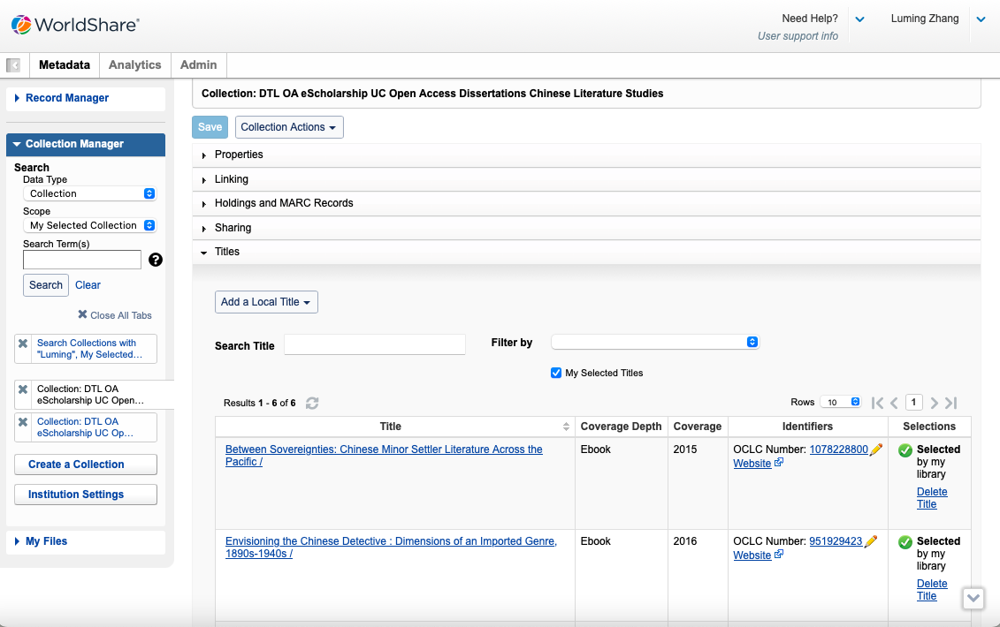
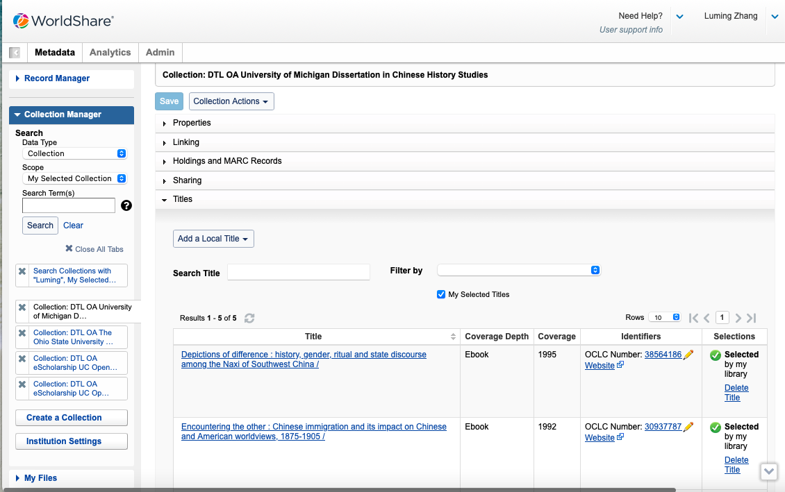

Welcome
Welcome to Luming Zhang's Directed Fieldwork Experience Repository! This repository contains all relevant artifacts from my fieldwork at the Digital Theological Library (DTL), where I focused on developing and managing digital collections in Chinese and Korean religious studies. This repository serves as both a professional portfolio of my work and a detailed record of the tasks performed, outcomes achieved, and knowledge gained during my internship.
Learning Outcomes
- Metadata Schema Development
- Digital Preservation Techniques
- Collection Management
- Intercultural Communication
- Community Engagement
Project Artifacts
Collections
Explore the collections I have created during my fieldwork, focusing on Chinese and Korean literature and history studies.
DTL OA eScholarship UC Open Access Dissertations Chinese History Studies

Description: This collection, created on June 20, 2024, focuses on open access dissertations related to Chinese history studies from the University of California eScholarship.
Download Collection 1 CSVDTL OA eScholarship UC Open Access Dissertations Chinese Literature Studies
Description: This collection, also established on June 28, 2024, contains open access dissertations related to Chinese literature studies from the University of California eScholarship.
Download Collection 2 CSVDTL OA The Ohio State University Open Access Dissertations Chinese Literature Studies

Description: This collection, created on July 12, 2024, contains open access dissertations related to Chinese literature studies from The Ohio State University.
Download Collection 3 CSVDTL OA University of Michigan Dissertation in Chinese History Studies
Description: This collection, created on July 30, 2024, focuses on open access dissertations related to Chinese history studies from the University of Michigan.
Download Collection 4 CSVDTL OA University of Michigan Dissertation in Chinese Literature Studies

Description: This collection, created on August 8, 2024, focuses on open access dissertations related to Chinese literature studies from the University of Michigan.
Download Collection 5 CSV